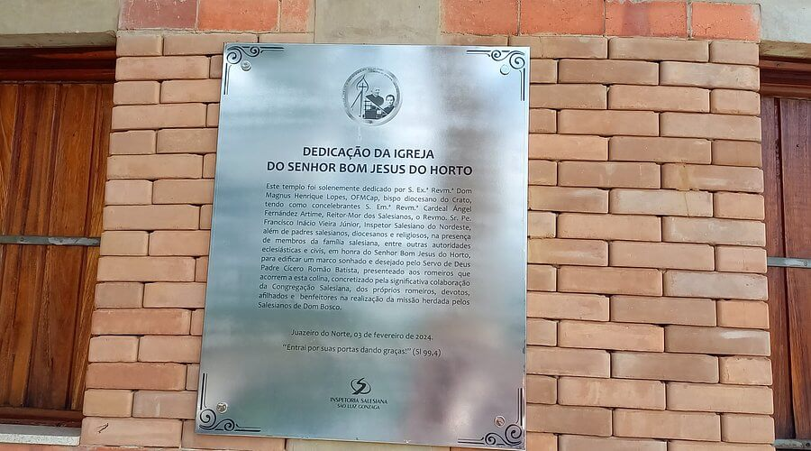
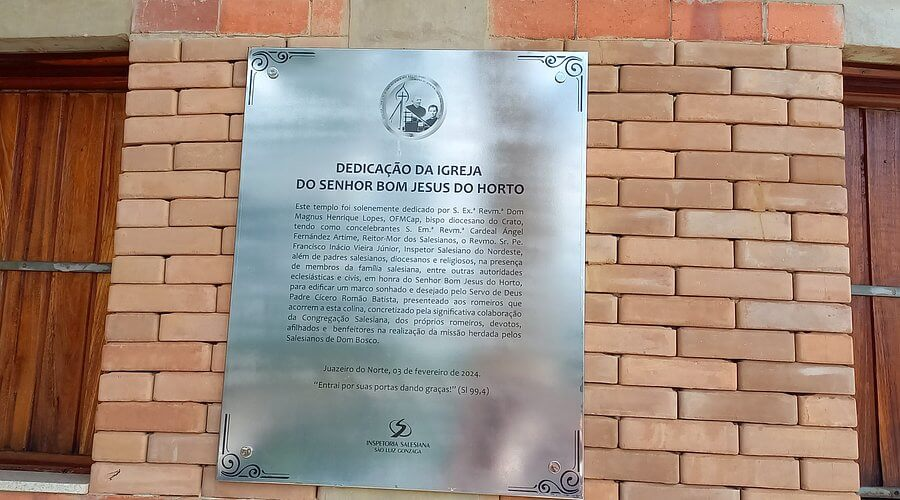
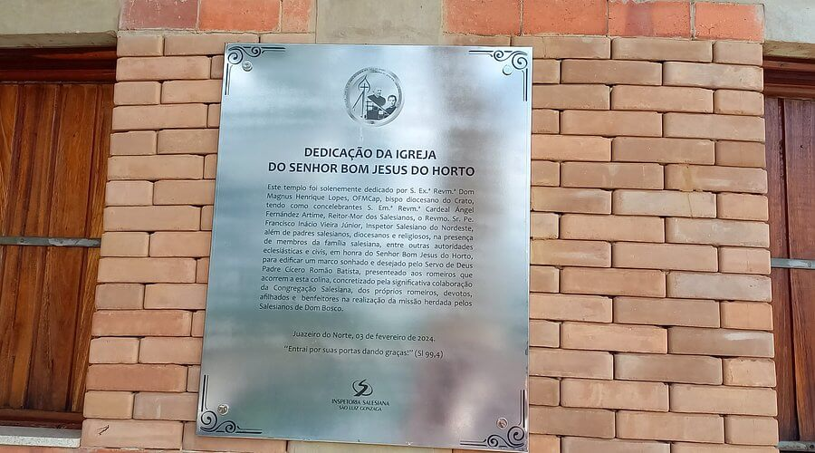

Fotos e Sua Localização
 

A Igreja Bom Jesus do Horto está localizada no Juazeiro do Norte, Ceará. Para mais detalhes, veja o mapa abaixo:
Segundo histórias de moradores locais, a igreja de Bom Jesus do Horto foi prometida por Padre Cícero em 1889, após um longo período de seca. Aliás, sua construção foi marcada por atrasos, levando mais de 18 anos em andamento. A obra está entre as maiores do país, com mais de 6 mil m² e uma torre principal com 48 metros de altura. Além disso, conta com desenhos e imagens sacras e decoração em granito por todo o altar.

A Igreja Bom Jesus do Horto está localizada no Juazeiro do Norte, Ceará. Para mais detalhes, veja o mapa abaixo: